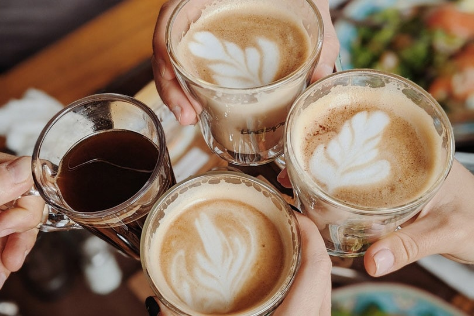
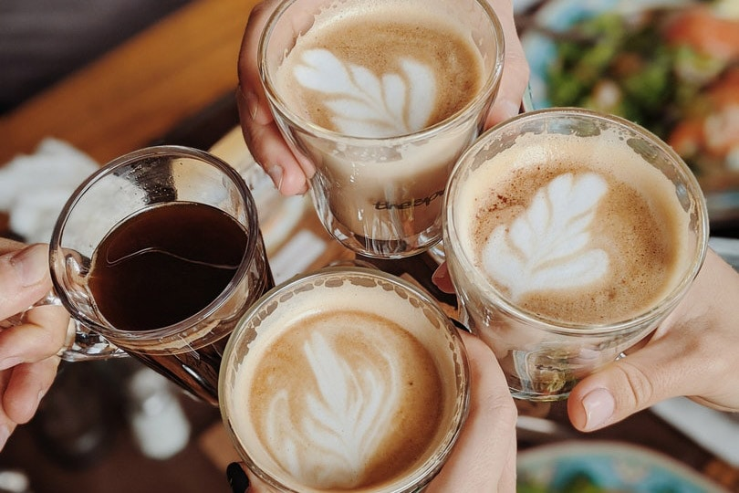

Na S.O.S. Café, acreditamos que o café é mais do que uma bebida — é uma pausa necessária, um convite à conexão e uma forma de cuidar de quem cuida de sistemas, códigos e ideias todos os dias. Nossos projetos foram criados para promover bem-estar, empatia e comunidade entre profissionais do setor de TI.
Promovemos encontros presenciais e virtuais entre profissionais de tecnologia, com o objetivo de trocar experi√™ncias, aliviar o estresse do dia a dia e fortalecer la√ßos entre colegas da área. Durante o Coffee Break Solidário, compartilhamos caf√©, hist√≥rias e boas práticas sobre equil√≠brio entre vida pessoal e profissional ‚Äî porque ningu√©m compila bem sem pausas. üíªüí¨
Saiba Mais e ParticipePensando em quem passa longas horas em frente à tela, montamos kits com cafés especiais, canecas, lanches e mensagens de incentivo. Eles são distribuídos a profissionais que enfrentam momentos de sobrecarga, *burnout* ou desemprego. Nosso objetivo é lembrar que, mesmo nas fases mais difíceis, ainda existe energia e calor humano para recomeçar.
Apoie a Distribuição de Kits

Nem sempre a falha está no c√≥digo ‚Äî √†s vezes, √© o cansa√ßo mental. O projeto 0800 Caf√© oferece um espa√ßo de escuta e acolhimento para profissionais de TI que precisam conversar, desabafar ou simplesmente fazer uma pausa acompanhada de um bom caf√©. Por meio de voluntários da área, criamos rodas de conversa e mentorias, fortalecendo a rede de apoio dentro da comunidade tech. ü§ù‚òï
Seja um Voluntário Terapêutico 


Nossa *API* precisa da sua chave de acesso. Escolha como você quer entrar para o nosso time de salvadores de Devs!